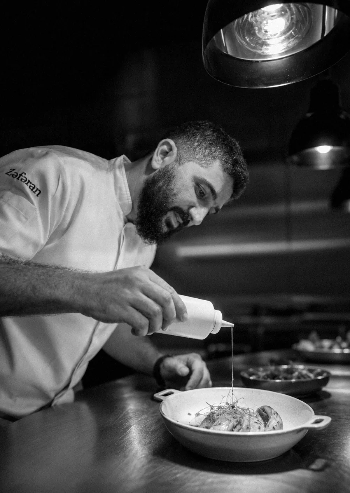

Chef
Ramin Nuriyev,
the storyteller chef

Ramin Nuriyev is one of the leading innovators of modern Azerbaijani fine cuisine. Weaving a rich culinary heritage together with an author's vision, he creates a gastronomy that impresses, inspires, and lingers in memory. As the host and creator of the popular «Mənim mətbəxim» series, he reveals the depth of his national cuisine and turns cooking into a true art form. His philosophy rests on flawless ingredient quality, respect for tradition, and a constant desire to surprise.